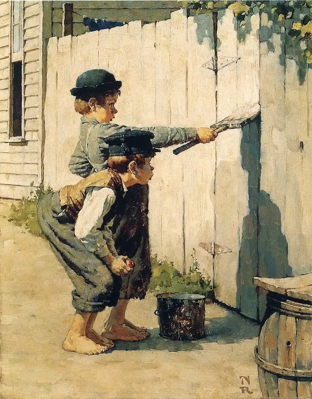

Право красить забор.
Тетя Полли прямо трясется над этим забором; понимаешь, он выходит на улицу, – если б это была та сторона, что во двор, она бы слова не сказала, да и я тоже. Она прямо трясется над этим забором. Его знаешь как надо белить? По-моему, разве один мальчик из тысячи, а то и из двух тысяч сумеет выбелить его как следует. – Да что ты? Слушай, пусти хоть попробовать, хоть чуть-чуть. Том, я бы тебя пустил, если б ты был на моем месте. – Бен, я бы с радостью, честное индейское! Да ведь как быть с тетей Полли? Джиму тоже хотелось покрасить, а она не позволила. Сиду хотелось, она и Сиду не позволила. Видишь, какие дела? Ну-ка, возьмешься ты белить забор, а вдруг чтонибудь… – Да что ты, Том, я же буду стараться. Ну пусти, я попробую. Слушай, я тебе дам серединку от яблока. – Ну, ладно… Хотя нет, Бен, лучше не надо. Я боюсь. – Я все яблоко тебе отдам! Том выпустил кисть из рук с виду не очень охотно, зато с ликованием в душе. И пока бывший пароход «Большая Миссури» трудился в поте лица на солнцепеке, удалившийся от дел художник, сидя в тени на бочонке, болтал ногами, жевал яблоко и обдумывал дальнейший план избиения младенцев. За ними дело не стало. Мальчики ежеминутно пробегали по улице; они подходили, чтобы посмеяться над Томом, – и оставались белить забор. Когда Бен выдохся, Том продал следующую очередь Билли Фишеру за подержанного бумажного змея, а когда тот устал белить, Джонни Миллер купил очередь за дохлую крысу с веревочкой, чтобы удобней было вертеть, и т.д. и т.д., час за часом. К середине дня из бедного мальчика, близкого к нищете, Том стал богачом и буквально утопал в роскоши. Кроме уже перечисленных богатств, у него имелось: двенадцать шариков, сломанная губная гармоника, осколок синего бутылочного стекла, чтобы глядеть сквозь него, пустая катушка, ключ, который ничего не отпирал, кусок мела, хрустальная пробка от графина, оловянный солдатик, пара головастиков, шесть хлопушек, одноглазый котенок, медная дверная ручка, собачий ошейник без собаки, черенок от ножа, четыре куска апельсинной корки и старая оконная рама. Том отлично провел все это время, ничего не делая и веселясь, а забор был покрыт известкой в три слоя! Если б у него не кончилась известка, он разорил бы всех мальчишек в городе. Том подумал, что жить на свете не так уж плохо. Сам того не подозревая, он открыл великий закон, управляющий человеческими действиями, а именно: для того чтобы мальчику или взрослому захотелось чего-нибудь, нужно только одно – чтобы этого было нелегко добиться. Если бы Том был великим и мудрым мыслителем, вроде автора этой книги, он сделал бы вывод, что Работа – это то, что человек обязан делать, а Игра – то, чего он делать не обязан. И это помогло бы ему понять, почему делать искусственные цветы или носить воду в решете есть работа, а сбивать кегли или восходить на Монблан – забава. Есть в Англии такие богачи, которым нравится в летнюю пору править почтовой каретой, запряженной четвериком, потому что это стоит им бешеных денег; а если б они получали за это жалованье, игра превратилась бы в работу и потеряла для них всякий интерес.